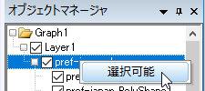
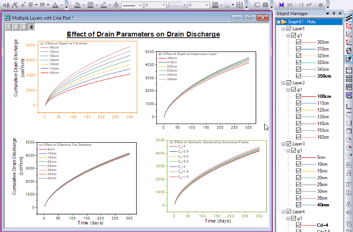
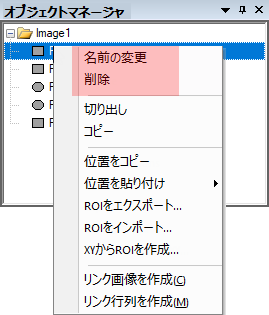

オブジェクトマネージャ
Object-Manager
オブジェクトマネージャの概要
オブジェクトマネージャは、デフォルトでワークスペースの右側で開くドッキング可能なパネルです。 オブジェクトマネージャを使えばアクティブウィンドウで素早く操作できます。
- メインメニューから表示: オブジェクトマネージャを選択します。
- オブジェクトマネージャのタイトルバーを右クリックして、ウィンドウの自動フローティング、ドッキング、非表示、自動非表示を行います。
- オブジェクトマネージャの空白部分で右クリックしてミニツールバーを選択します。
アクティブグラフウィンドウでデータプロットまたはグラフオブジェクトを管理
データプロットの管理
レイヤ、グループ（ある場合）、プロット、特別な点（ある場合）といった、グラフウィンドウに含まれる項目を階層的に表示します。
- (a). すべてのプロット項目には、シンボルのアイコン（等高線やカラーマップ曲面の場合は、色スケールサムネイル）と以下のプロット名があります。
- (b). プロット名は、文法的に「グラフの凡例」のようなソースデータにリンクしています。
グラフオブジェクトの管理
レイヤ、グラフオブジェクト（軸タイトル、凡例、テキストまたは描画オブジェクトなど）といったグラフウィンドウに含まれるグラフオブジェクトを階層的に表示します。
アクティブワークブックと行列ウィンドウのシートを管理
これは、ブック/行列ウィンドウに含まれているもの(ブックとシート)をツリーノード構造で表示する1つのパネルウィンドウです。 ワークブックのショートネーム、シートの名前とラベルが一覧表示されます。
オブジェクトマネージャとグラフウィンドウの相互作用
表示モードの切り替え

表示モード: プロットまたはグラフオブジェクトの表示
- プロットの表示：現在のグラフにプロットを表示します。右上隅には、表示モードのステータスを表示するための小さなプロットを表示ボタンがあります。（デフォルト）
- グラフオブジェクトの表示：図形オブジェクト、テキストオブジェクト、凡例、カラースケール、軸タイトルなどを含むグラフオブジェクトを表示します。右上隅には、表示モードのステータスを表示する小さなボタン グラフ オブジェクトの表示 があります。
- オブジェクトマネージャーの空白部分を右クリックするか、グラフノードを右クリックして、グラフオブジェクトの表示またはプロットを表示を選択し、表示モードを変更します。
- 右上隅の小さいボタンまたはをクリックして、表示モードを切り替えます。
- ホットキーCtrl+Shift+Sを押して、 ステータスを切り替えます。
表示モードの順序
プロット下の白い領域もしくはグラフノードを右クリックして、見た目の順に表示または描画順に表示を選択して、現在のグラフのプロットの表示モードを変更できます。
- 見た目の順に表示：プロットをグラフでの見たの順番で表示します。
- 描画順に表示：プロットを描画順で表示します。
プロットの操作
オブジェクトマネージャのプロット上で右クリックすると、コンテキストメニューから特定の操作が可能です。
ミニツールバーが有効な場合、プロットをクリックすると、対応するミニツールバーが表示されます。例えば、グループ内の折れ線グラフを選択すると下図のようなミニツールバーが開きます。

グラフ要素の選択
オブジェクトマネージャで要素（レイヤ、プロットグループ、データプロット、特別なポイント）を選択すると、グラフウィンドウで対応する要素が選択されます。Note: グラフがプロットグループに属している場合、まずクリックしてグループを選択し、もう一度クリックして個別のグラフを選びます。
グラフレイヤに散布図、折れ線、線+シンボルのプロットがある場合、オブジェクトマネージャで以下のように1つのプロットを選択すると、他のプロットがフェードアウトします。反対に、グラフウィンドウで1つのグラフを選択すると、レイヤ内の他のグラフはフェードアウトします(@PSFFのノートをご覧ください)。
-
- オブジェクトマネージャでは、上下の矢印キーを使って選択範囲を移動できます。 グラフ内では、左右の矢印キーを使ってプロット選択を移動します。
- エラーバーを個別に選択することはできません。エラーバーのあるプロットを選択すると、エラーバーのフェードは親プロットに従います。
- 複数レイヤの場合、Originは重なったレイヤがあるかどうかを確認します。プロットを選択すると、オーバーラップしたレイヤのプロットを含め、Originは他のすべてのプロットをフェードアウトさせます。重なっていないレイヤのプロットについては通常の表示のままです。
- 選択されたプロットは、アクティブプロットになります。
- ワークブックウィンドウのオブジェクトマネージャーパネルのようにホットキー"Ctrl+クリック"と"Shift+矢印キー"を使用している場合でも、一度に1つのプロットしか選択できません。
- オブジェクトマネージャでグループを選択(gNと表示されています)すると、グループに含まれるプロットがハイライトされ、データポイントは太字で表示されます。ハイライトされたデータポイントに対して、システム変数 @DTBを使用することができます。
Note: システム変数@PSFF を使って未選択プロットのフェードアウトの度合い(%)を設定できます。デフォルトの値は25で、負の値を設定するとフェードアウト選択モードがオフになり、古い選択動作(すべてのデータ点を太字で表示)に戻ります。
|
プロットの表示/非表示
- チェックボックスの選択解除/選択をして、要素項目（レイヤ、グループ、プロット、特定ポイントおよびグラフオブジェクト）を非表示/表示にします。
-
- 同じ名前のグラフのセットを表示/非表示にするには、グラフを1つ選んで右クリックして、グラフを同じ名前で表示・非表示を選びます。
- 特定の名前のプロットセットのみを表示し、他のすべてのプロットを非表示にするには、いずれかのプロットを右クリックして、グラフを同じ名前で表示を選択します 。
-
- プロットのいずれかの上で右クリックして、全てのプロットを表示を選択し、グラフにすべてのプロットを表示します。
- プロットのいずれかの上で右クリックして、全てのプロットを非表示を選択し、グラフにすべてのプロットを非表示にします。
 | インポートしたshapefiles (.shp) で作業する場合、オブジェクトマネージャーで、グラフ内のShapefileのそれぞれの内容（点、ポリライン、ポリゴン）を右クリックして 選択可能 にします。違うコンポ―ネントを選ばないようにするには、チェックマークを外します。
- 
|
行列オブジェクト/仮想行列のZタイトルの名前変更
行列オブジェクトのロングネーム/仮想行列のZタイトルは、オブジェクトマネージャでグラフ用にカスタマイズできます。
行列または仮想行列で等高線図/3Dプロットを作成します。グラフウィンドウがアクティブになっているときに、オブジェクトマネージャでプロットを右クリックし、コンテキストメニューから名前の変更を選択すると、行列オブジェクトまたは仮想行列のロングネームを入力できます。
Note: ここでは、行列または仮想行列のロングネームを変更しますが、グラフのロングネームは変更しません。
行列オブジェクトの名前を変更するには、行列プロパティダイアログを使用することもできます。
仮想行列の名前を変更するには、仮想行列マネージャダイアログを使用することもできます。
グループ内でのプロットの移動
レイヤ内の描画の順序は、 レイヤの内容/作図のセットアップ/オブジェクトマネージャリストのプロット順で決まります。すなわち、リストの先頭にある最初のプロットは一番上に描画され、リストの最後尾にあるプロットは、最後に描画されます。このように作図順は、重なっているプロットやグループ化されたプロットの推移リストに準じて行われます。
- プロットを選択し、 右クリックして前面へ移動または背面へ移動を選択して、リスト・グループ内を上下に移動します(例えば、gN要素の下)。グループの中で上下に移動する場合にシンボルや線の色を維持するには、まずグループノード（例：g1）で右クリックし、 編集モード：独立を選択し、プロット順序を変更します。
グループをまたぐプロットの移動
以下のオブジェクトマネージャのショートカットでグループを作成したり、グループからプロットを削除します。
- グループ開始に設定: グループの最初のグラフとして設定します。このグラフの上に位置しているプロットはグループから除外されます。
- グループ終了に設定: グループの最後のグラフとして設定します。このグラフの下に位置しているプロットはグループから除外されます。
- グループ外に移動: 選択したグラフをグループから取り除きます。これはグラフウィンドウからグラフを削除するわけではありません、削除するには削除を使用します。
- グループ間、レイヤ間でプロットを移動するには、オブジェクトマネージャ上でグラフをドラッグして移動します。空のレイヤにドラッグしても移動させることは出来ません(他の軸・レイヤへグラフを移動するをご覧ください。).
右/左Y軸にプロット
Origin 2023以降、グラフにレイヤを追加しなくても、右Y 軸を追加できるようになりました。これを行うには3つの方法があり、そのうちの2つは オブジェクトマネージャを使用します。
- 作図の詳細ダイアログを使用して、もう一方の軸（右または左）をオンにし、1つまたは複数のプロットを軸に割り当てます。
- オブジェクトマネージャにて、右Yに対してプロットするプロットのアイコンを選択し、(a) アイコンを右クリックして、ショートカットメニューからを右Y軸にプロット選択します。または (b) ミニツールバーの右Y軸にプロットボタンをクリックします。
右Y軸がレイヤに追加されると、右Y軸に対してプロットされるデータは、データセット名の前に (R) を表示します。左Yに対してプロットされたものは、データセット名の前に (L) が表示されます。
レイヤ間でプロットを移動
- 右/左Y軸にプロット: このオブジェクトマネージャのショートカットメニューを使って、右/左Y軸を表示して選択したプロットを右/左Y軸に移動できます。これは、新しいレイヤを作成せずに、現レイヤの2番目のY軸を表示してプロットします。左と右のY軸が両方表示すると、プロット名の先頭に (R) または (L) のラベルが追加表示され、どちらの軸に対してプロットされているか確認できます。
- プロットを他のレイヤに移動：このショートカットでは選択したプロットを他のレイヤに移動します。このショートカットを選択すると、グラフの移動 : laymplotダイアログが開きます。このダイアログでは、移動したいグラフと移動先のレイヤの指定、新しいレイヤの設定ができます。
ドラッグしてもプロットをレイヤ間を移動できないことがあります。その場合に、このコマンドを使用してレイヤにプロットを追加します。
プロットや特定の点を削除
- グラフからプロットを削除する場合は、プロットを右クリックし削除を選択します。削除されたプロットの下のプロットが上位になり、新しいプロットインデックスになります。削除はグラフからプロットを削除します。一時的にプロットを非表示にしたい場合、グラフウィンドウのデータプロットを隠すを選ぶか、オブジェクトマネージャのプロットの隣のチェックボックスを外します。
- プロットから特別なデータポイントをすべて取り除くには全ての特別な点を削除を選びます。
- 一つずつ特別な点を取り除く場合、特別な点を右クリックして、コンテクストメニューから取り除くを選びます。または、オブジェクトマネージャで点を選びDELETEキーを押します。
プロットタイプを素早く変更する
- プロットタイプをすばやく変更するには、プロットの項目を選択後、右クリックをして、プロットタイプの変更：希望のタイプ を選択します。
ソースワークブックに移る
- プロットのソースワークブックをアクティブにするには、プロット項目を選択後、右クリックして、ソースワークブックに移るを選択します。
作図の詳細、レイヤの内容、作図のセットアップダイアログを開く
- グラフ、レイヤ、プロットレベルのコンテキストメニューに、作図の詳細、 レイヤ内容、作図のセットアップダイアログを開くオプションがあります。右クリックしたレベル/プロットの項目によって、ダイアログ中のアクティブなレベル/プロットが変更されます。
-
| アイテムをダブルクリックして、その項目に対応する作図の詳細ダイアログ開くことも可能です。
|
グループに対して操作
グループ化プロットにはいくつか固有の設定があります。グループ行で右クリックすると以下のコンテキストメニューが開きます。
ミニツールバーが有効な場合、グループの行をクリックすると、対応するミニツールバーが表示されます。

グループの名前変更
グループを右クリックして、名前の変更を選択します。グループ名（ロングネーム）が編集モードになります。新しい名前を入力できます。このグループ名は、メインメニューデータの下部にリストされ、また、レイヤ内容ダイアログのツールチップとしてグループ列にマウスを合わせたときに表示されます。
プロットのグループ化を解除する
右クリックして、グループ化解除を選んで、グループを解除します。
シーケンシャルプロット等をもう一度グループ化するには、最初のプロットを右クリックしグループ開始に設定を選ぶと、以降のプロットをグループ化します。
グループ化プロットの順序変更
グループの下のプロットは一つの単位として扱われますが、プロットを右クリックし、上へ移動および下へ移動メニューを選択することで並べ替えることができます。
グループを削除する
グループを右クリックして、削除を選択すると、現在のレイヤから全てのグループプロットを削除します。メインメニュー編集：元に戻すをクリックするか、Ctrl+Zで削除したものを戻します。
グループ化プロットの編集モードを変更
グループで右クリックして、編集モード：従属あるいは編集モード：独立を選択し、このグループ下のプロットの編集モードを変更できます。
グループ化プロットのグラフタイプを変更する
右クリックして、プロットの変更: ###を選んで、プロットタイプを変更します。
ソースブックに移る
現在のグループのプロットのソースワークブックまたは行列ブックに移動します。
他の関連するダイアログに移る
グループを右クリックし作図の詳細またはレイヤ内容、作図のセットアップを選びます。
1つのレイヤでの操作
1つのレイヤに対しての固有の操作があります。レイヤの階層で右クリックすると以下のコンテキストメニューが開きます。
ミニツールバーが有効な場合、グループの行をクリックすると、対応するミニツールバーが表示されます。
レイヤ内のプロット順序を逆にする
1つのレイヤに複数のプロットをプロットしたら、オブジェクトマネージャのレイヤノードを右クリックして、プロット順を逆にするを選択して、現レイヤの全プロットの順序を逆にします。
順序を逆にすると、Originはグループ化されたプロットのプロパティを保持します。したがって、グループ化されたプロットの推移プロパティが設定されている場合は、プロットの順序が逆になった後で各プロットが同じスタイルになるように、増分リストを更新する必要があります。
レイヤの名前変更
名前変更を選択すると、レイヤ名を変更できます。レイヤ番号は保持されます。
レイヤ順序と描画順の変更
オブジェクトマネージャでレイヤをクリックすると、そのレイヤがグラフ内で選択されます（わかりやすくするためにグラフ内の選択ハンドルは表示されません）。コンテキストメニューから最前面へ移動、 前面へ移動、 背面へ移動、最背面へ移動を選択してレイヤの描画順を調整します。
| 注意点：
- リンクしたレイヤの順序を変更すると、親レイヤとのリンクが外れますという警告が表示されることがあります。レイヤの順序を変更するとき、リンクしているレイヤの相対位置や軸スケールを大きく変更しなければ、既存のリンクを安全に解除できます。
- レイヤの順序とは別に、作図する順番は作図の詳細のレイヤタブにある作図の順番で設定します。詳細は、このページをご覧ください。
|
全ての兄弟を折りたたみ/拡張
すべてのレイヤ下にあるすべてのプロットを縮小または展開するには、コンテキストメニューの全ての兄弟を折りたたみまたは全ての兄弟を拡張を選択します。
グラフオブジェクトの操作
オブジェクトマネージャでグラフオブジェクトを管理するには、空白もしくはオブジェクトマネージャのグラフノードを右クリックして、グラフオブジェクトの表示を選択します。
ミニツールバーが有効な場合、オブジェクトをクリックすると、対応するミニツールバーが表示されます。例えば、グラフ凡例上でクリックすると、下図のようなミニツールバーが表示されます。
グラフオブジェクトの選択
オブジェクトマネージャでグラフオブジェクトを選択して、グラフウィンドウで対応するグラフオブジェクトを選びます。その逆も同様です。
グラフオブジェクトの表示/非表示
項目の前のチェックボックスを解除/選択して、グラフオブジェクトを非表示/表示します。
オブジェクトプロパティを編集
オブジェクトマネージャで開くには：オブジェクトマネージャでグラフオブジェクトを右クリックして、コンテキストメニューでプロパティを選択する
または
オブジェクトマネージャでグラフオブジェクトの項目をダブルクリックします。
グラフオブジェクトの順序を変更
コンテキストメニューから、最前面へ移動、 前面へ移動、 背面へ移動、最背面へ移動、データポイントを後部に、データポイントを前面にを選択してレイヤにおけるグラフオブジェクトの順番を調整します。
同じ名前の全オブジェクトを選択
同じ名前の全てを選択メニューを使って、現ページにある同じ名前のオブジェクトを一括選択できます。これらのオブジェクトをすべて選択したら、そのうちの 1 つをクリックすると、ミニ ツールバーがポップアップして、それらをまとめてカスタマイズできるようになります。
複数のグラフオブジェクトのグループ化/非グループ化
オブジェクトマネージャで複数のグラフオブジェクトを選択して右クリックし、グループ化を選択して選択したオブジェクトをグループ化します。
オブジェクトのグループ化を解除するには、グループノード上で右クリックし、非グループ化を選択します。
複数のグラフオブジェクトを整列
複数のグラフオブジェクトを整列させるには、コンテキストメニューから、左揃え、左右中央揃え、右揃え、上揃え、上下中央揃え、下揃え、 水平方向に整列、垂直方向に整列、を選択します。また、オブジェクト編集ツールバーにあるボタンを使って、オブジェクトを整列することもできます。
複数のセレクションを操作する
Ctrl/Shiftキーを押しながら複数のレイヤやプロット、グラフオブジェクトを選択することで同時にそれらを編集できます。


オブジェクトマネージャとブックウィンドウ間の対話
Origin 2020以降、 オブジェクトマネージャは現在のブック/行列内のすべてのシートを一覧表示し、シートレベルでブックまたは行列ウィンドウと対話することができます。
ミニツールバーが有効な場合、ワークブックをアクティブにしてオブジェクトマネージャーのシートの階層をクリックすると、以下のミニ ツールバーが表示されます。
任意のシートを右クリックすると、ワークシートタブ自体のコンテキストメニュー項目を選択して実行する基本操作と同様に、コンテキストメニューからシートの基本操作を実行できます。
- シートを選択します。
- ツリーノードをクリックして、ワークブックまたは行列ウィンドウでシートを選択できます。ブックノードをクリックして、最初のシートをアクティブにします。ブックノードをダブルクリックすると、ウィンドウプロパティダイアログが開きます。
- 複数シートを選択
- Ctrlキーを押しながらシートを1つずつクリックすると、複数の選択を行うことができます。また、 Shift キーを押しながら矢印キー(上または下)キーを使用すると、複数のシートを選択できます。
- シートの挿入、追加、および削除
- 任意のシートノードを右クリックすると、上に新しいシートを挿入したり、現在のシートを削除したり、最後に新しいシートを追加したりできます。
- 他のウィンドウをシートとして追加
- グラフをシートとして追加、行列をシートとして追加、ノートをシートとして追加できます。
- シートの非表示/表示
- シート上で右クリックして隠すを選択すると非表示になり、非表示シート上で右クリックして表示を選択すると表示できます。
- シートのコピーと貼り付け
- シートタブを右クリックして、コンテキストメニューのシートをコピーと新しいシートとして貼り付けを選択する 。
- シートを複製
- データなしで複製または複製を選択して、現在のワークシートをデータ付きまたはデータなしで複製できます。
- シートの移動と順序変更
- シートをドラッグ&ドロップして並べ替えるか、移動メニューアイテムを使用して並べ替えることができます。
- シートにメモを付ける
- 名前とコメントダイアログを開き、現在のシートの名前とコメントを設定できます。
- プロットダイアログとExcelエクスポートからシートを除外
- 一部のシートを除外して、プロットダイアログとExcelエクスポートダイアログに含めないようにすることができます。
- シート保護
- シート上で右クリックしてシート保護を選択すると、シート保護オプションダイアログが開き、シートの内容の保護方法を決定できます。
- シートを移動
- シート上で右クリックして移動を選択すると、ワークシートの操作または行列シートの操作ダイアログが開き、現ブックの全シートの移動が可能です。
| Origin 2022以降、シートタブに色を追加できます。これを行うと、オブジェクトマネージャはシートにタブの色でマークを付けます。
|
オブジェクトマネージャでの名前付き範囲
名前付き範囲は、それらが定義されているワークシートの下に一覧表示されます。

- 割り当てられた範囲が範囲名の横に表示されます。
- 名前付き範囲アイコンはスコープを示します。
- 名前付き範囲をシングルクリックすると、ワークシート内の割り当てられた範囲がハイライトされます。
- ハイライトされた名前付き範囲をダブルクリックすると名前付き範囲の管理が開きます。
オブジェクトマネージャとレイアウトウィンドウの相互作用
オブジェクトマネージャは現在のレイアウトウィンドウにすべてのオブジェクトを一覧表示し、オブジェクトの操作をサポートします。
オブジェクトの操作については、このページのグラフオブジェクトセクションを参照してください。
オブジェクトマネージャとイメージウィンドウの相互作用
オブジェクトマネージャは全てのROIを一覧表示し、イメージウィンドウとオブジェクトマネージャで相互作用することをサポートしています。

- 